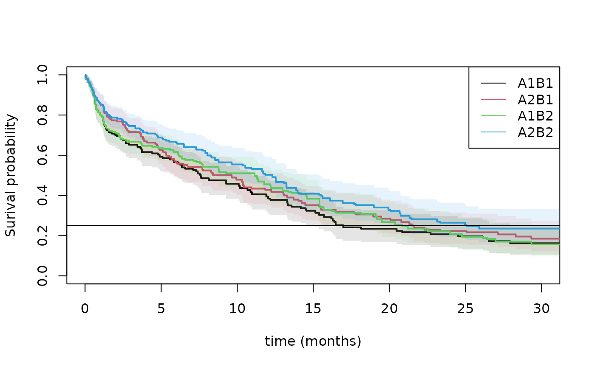

Randomization for Cox Type rate models
Klaus Holst & Thomas Scheike
2025-11-05
Source:vignettes/phreg_rct.Rmd
phreg_rct.RmdTwo-Stage Randomization for counting process outcomes
Specify rate models of .
- survival data
- competing risks, cause specific hazards.
- recurrent events data
Under simple randomization we can estimate the rate Cox model
Under two-stage randomization we can estimate the rate Cox model
Starting point is that Cox’s partial likelihood score can be used for estimating parameters where is the combined treatments over time.
- the solution will converge to the Struthers-Kalbfleisch solution of the score and will have robust standard errors Lin-Wei.
The estimator can be agumented in different ways using additional
covariates at the time of randomization and a censoring augmentation.
The solved estimating eqution is
using the covariates from
augmentR0 to augment with
where possibly
but does not depend on covariates under randomization, and furhter using
the covariates from augmentR1, to augment with R indiciating that the
randomization takes place or not,
and the dynamic censoring
augmenting
where
is chosen to minimize the variance given the dynamic covariates
specified by augmentC.
The propensity score models are always estimated unless it is requested to use some fixed number for example, but always better to be adaptive and estimate . Also and are estimated to reduce variance of .
- The treatment’s must be given as factors.
- Treatment for 2nd randomization may depend on response.
- Treatment probabilities are estimated by default and uncertainty from this adjusted for.
- treat.model must then typically allow for interaction with treatment number and covariates
- Randomization augmentation for 1’st and 2’nd randomization possible.
- typesR=c(“R0”,“R1”,“R01”)
- Censoring model possibly stratified on observed covariates (at time
0).
- default model is to stratify after randomization R0
- cens.model can be specified
- Censoring augmentation done dynamically over time with
time-dependent covariates.
- typesC=c(“C”,“dynC”), C fixed coefficients and dynC dynamic
- done for each strata in censoring model
Standard errors are estimated using the influence function of all estimators and tests of differences can therefore be computed subsequently.
- variance adjustment for censoring augmentation computed subtracting variance gain
- influence functions given for case with R0 only
The times of randomization is specified by
- treat.var is “1” when a randomization is given
- default is to assume that all time-points corresponds to a treatment, the survival case without time-dependent covariates
- recurrent events situation must be specified as first record of each subject, see below example.
Data must be given on start,stop,status survival format with
- one code of status indicating events of interest
- one code for the censorings
The phreg_rct can be used for counting process style data, and thus covers situations with
- recurrent events
- survival data
- cause-specific hazards (competing risks)
and will in all cases compute augmentations
- dynamic censoring augmentation
- dynC
- RCT augmentation
- R0, R1 and R01
Simple Randomization: Lu-Tsiatis marginal Cox model
library(mets)
set.seed(100)
## Lu, Tsiatis simulation
data <- mets:::simLT(0.7,100)
dfactor(data) <- Z.f~Z
out <- phreg_rct(Surv(time,status)~Z.f,data=data,augmentR0=~X,augmentC=~factor(Z):X)
summary(out)
#> Estimate Std.Err 2.5% 97.5% P-value
#> Marginal-Z.f1 0.29263400 0.2739159 -0.2442313 0.8294993 0.2853693
#> R0_C:Z.f1 0.07166242 0.2234066 -0.3662065 0.5095313 0.7483838
#> R0_dynC:Z.f1 0.08321604 0.2221710 -0.3522312 0.5186633 0.7079889
#> attr(,"class")
#> [1] "summary.phreg_rct"
###out <- phreg_rct(Surv(time,status)~Z.f,data=data,augmentR0=~X,augmentC=~X)
###out <- phreg_rct(Surv(time,status)~Z.f,data=data,augmentR0=~X,augmentC=~factor(Z):X,cens.model=~+1)Results consitent with speff of library(speff2trial)
###library(speff2trial)
library(mets)
data(ACTG175)
###
data <- ACTG175[ACTG175$arms==0 | ACTG175$arms==1, ]
data <- na.omit(data[,c("days","cens","arms","strat","cd40","cd80","age")])
data$days <- data$days+runif(nrow(data))*0.01
dfactor(data) <- arms.f~arms
notrun <- 1
if (notrun==0) {
fit1 <- speffSurv(Surv(days,cens)~cd40+cd80+age,data=data,trt.id="arms",fixed=TRUE)
summary(fit1)
}
#
# Treatment effect
# Log HR SE LowerCI UpperCI p
# Prop Haz -0.70375 0.12352 -0.94584 -0.46165 1.2162e-08
# Speff -0.72430 0.12051 -0.96050 -0.48810 1.8533e-09
out <- phreg_rct(Surv(days,cens)~arms.f,data=data,augmentR0=~cd40+cd80+age,augmentC=~cd40+cd80+age)
summary(out)
#> Estimate Std.Err 2.5% 97.5% P-value
#> Marginal-arms.f1 -0.7036460 0.1224406 -0.9436251 -0.4636669 9.092786e-09
#> R0_C:arms.f1 -0.7265342 0.1197607 -0.9612610 -0.4918075 1.306891e-09
#> R0_dynC:arms.f1 -0.7204699 0.1196158 -0.9549125 -0.4860272 1.710025e-09
#> attr(,"class")
#> [1] "summary.phreg_rct"The study is actually block-randomized according (?) so the standard should be computed with an adjustment that is equivalent to augmenting with this block as factor
dtable(data,~strat+arms)
#>
#> arms 0 1
#> strat
#> 1 223 213
#> 2 96 106
#> 3 213 203
dfactor(data) <- strat.f~strat
out <- phreg_rct(Surv(days,cens)~arms.f,data=data,augmentR0=~strat.f)
summary(out)
#> Estimate Std.Err 2.5% 97.5% P-value
#> Marginal-arms.f1 -0.7036460 0.1224406 -0.9436251 -0.4636669 9.092786e-09
#> R0_none:arms.f1 -0.7009844 0.1217138 -0.9395390 -0.4624298 8.447051e-09
#> attr(,"class")
#> [1] "summary.phreg_rct"Two-Stage Randomization CALGB-9823 for survival outcomes
We here illustrate some analysis of one SMART conducted by Cancer and Leukemia Group B Protocol 8923 (CALGB 8923), Stone and others (2001). 388 patients were randomized to an initial treatment of GM-CSF (A1 ) or standard chemotherapy (A2 ). Patients with complete remission and informed consent to second stage were then re-randomized to only cytarabine (B1 ) or cytarabine plus mitoxantrone (B2 ).
We first compute the weighted risk-set estimator based on estimated weights where , that is 1 when you start on treatment and then for those that changes to at time then is scaled up with the proportion doing this. This is equivalent to the IPTW (inverse probability of treatment weighted estimator). We estimate the treatment regimes and by letting indicate those that are consistent with ending on . then starts being and becomes if the subject is treated with , but stays if the subject is treated with . We can then look at the two strata where and . Similary, for those that end being consistent with . Thus defining to start being , then stays if is taken, and becomes if the second randomization is .
- the treatment models are for all time-points, unless the weight.var variable is given (1 for treatments, 0 otherwise) to accomodate a general start,stop format
- the treatment model may also depend on a response value
- standard errors are based on influence functions and is also computed for the baseline
We here use the propensity score model that uses the observed frequencies on arm among those starting out on either or .
data(calgb8923)
calgt <- calgb8923
tm=At.f~factor(Count2)+age+sex+wbc
tm=At.f~factor(Count2)
tm=At.f~factor(Count2)*A0.f
head(calgt)
#> id V X Z TR R U delta stop age wbc sex race time status start
#> 1 1 0 0 0 0.00 0 13.33 1 13.33 64 128.0 1 1 13.338219 1 0.00
#> 2 2 1 1 0 0.00 0 17.80 1 17.80 71 4.3 2 1 17.802995 1 0.00
#> 3 3 1 0 0 0.00 0 1.27 1 1.27 71 43.6 2 1 1.271527 1 0.00
#> 4 4 1 0 1 0.00 0 24.77 1 24.77 63 72.3 2 1 0.730000 2 0.00
#> 5 4 1 0 1 0.73 1 24.77 1 24.77 63 72.3 2 1 24.772515 1 0.73
#> 6 5 0 1 0 0.00 0 10.37 1 10.37 65 1.4 1 1 10.374479 1 0.00
#> A0.f A0 A1 A11 A12 A1.f A10 At.f lbnr__id Count1 Count2 consent trt2 trt1
#> 1 0 0 0 1 0 0 0 0 1 0 0 -1 -1 1
#> 2 1 1 0 1 0 0 0 1 1 0 0 -1 -1 2
#> 3 0 0 0 1 0 0 0 0 1 0 0 -1 -1 1
#> 4 0 0 0 1 0 0 0 0 1 0 0 -1 -1 1
#> 5 0 0 1 1 1 1 1 1 2 0 1 1 1 1
#> 6 1 1 0 1 0 0 0 1 1 0 0 -1 -1 2
ll0 <- phreg_IPTW(Event(start,time,status==1)~strata(A0,A10)+cluster(id),calgt,treat.model=tm)
pll0 <- predict(ll0,expand.grid(A0=0:1,A10=0,id=1))
ll1 <- phreg_IPTW(Event(start,time,status==1)~strata(A0,A11)+cluster(id),calgt,treat.model=tm)
pll1 <- predict(ll1,expand.grid(A0=0:1,A11=1,id=1))
plot(pll0,se=1,lwd=2,col=1:2,lty=1,xlab="time (months)",xlim=c(0,30))
plot(pll1,add=TRUE,col=3:4,se=1,lwd=2,lty=1,xlim=c(0,30))
abline(h=0.25)
legend("topright",c("A1B1","A2B1","A1B2","A2B2"),col=c(1,2,3,4),lty=1)
summary(pll1,times=1:10)
#> $pred
#> [,1] [,2] [,3] [,4] [,5] [,6] [,7]
#> [1,] 0.8022569 0.7119656 0.6675967 0.6471848 0.6369788 0.6164021 0.5770105
#> [2,] 0.8568499 0.7871414 0.7456444 0.7133504 0.6878999 0.6623719 0.6400970
#> [,8] [,9] [,10]
#> [1,] 0.5427705 0.5154506 0.5103024
#> [2,] 0.6109335 0.5646244 0.5543596
#>
#> $se.pred
#> [,1] [,2] [,3] [,4] [,5] [,6]
#> [1,] 0.02861524 0.03101141 0.03283701 0.03265187 0.03255301 0.03229413
#> [2,] 0.02491113 0.02819870 0.02918381 0.03134551 0.03175905 0.03205534
#> [,7] [,8] [,9] [,10]
#> [1,] 0.03387985 0.03486639 0.03785952 0.03806234
#> [2,] 0.03345603 0.03601502 0.03946837 0.03959668
#>
#> $lower
#> [,1] [,2] [,3] [,4] [,5] [,6] [,7]
#> [1,] 0.7480876 0.6537066 0.6062423 0.5862506 0.5762674 0.5562481 0.5142857
#> [2,] 0.8093900 0.7337687 0.6905840 0.6544855 0.6283866 0.6024322 0.5777713
#> [,8] [,9] [,10]
#> [1,] 0.4785606 0.4463411 0.4408982
#> [2,] 0.5442707 0.4923330 0.4819390
#>
#> $upper
#> [,1] [,2] [,3] [,4] [,5] [,6] [,7]
#> [1,] 0.8603486 0.7754168 0.7351604 0.7144523 0.7040864 0.6830613 0.6473856
#> [2,] 0.9070927 0.8443964 0.8050947 0.7775096 0.7530497 0.7282753 0.7091460
#> [,8] [,9] [,10]
#> [1,] 0.6155957 0.5952608 0.5906319
#> [2,] 0.6857613 0.6475306 0.6376627
#>
#> $times
#> [1] 1 2 3 4 5 6 7 8 9 10
#>
#> attr(,"class")
#> [1] "summarypredictrecreg"
summary(pll0,times=1:10)
#> $pred
#> [,1] [,2] [,3] [,4] [,5] [,6] [,7]
#> [1,] 0.8017327 0.7008265 0.6523029 0.6158134 0.5923768 0.5659830 0.5329907
#> [2,] 0.8560743 0.7740713 0.7153512 0.6690102 0.6272139 0.5642496 0.5412531
#> [,8] [,9] [,10]
#> [1,] 0.4856035 0.4751084 0.4580125
#> [2,] 0.5244200 0.5014231 0.4784263
#>
#> $se.pred
#> [,1] [,2] [,3] [,4] [,5] [,6]
#> [1,] 0.02874374 0.03363964 0.03593932 0.03745772 0.03849765 0.03905568
#> [2,] 0.02508408 0.03053222 0.03382459 0.03662354 0.03831324 0.04083119
#> [,7] [,8] [,9] [,10]
#> [1,] 0.03953451 0.04080406 0.04110910 0.04157512
#> [2,] 0.04145722 0.04203299 0.04238077 0.04269490
#>
#> $lower
#> [,1] [,2] [,3] [,4] [,5] [,6] [,7]
#> [1,] 0.7473298 0.6379004 0.5855331 0.5466050 0.5215305 0.4943860 0.4608737
#> [2,] 0.8082955 0.7164839 0.6520354 0.6009461 0.5564424 0.4896381 0.4658035
#> [,8] [,9] [,10]
#> [1,] 0.4118674 0.4009976 0.3833640
#> [2,] 0.4481818 0.4248738 0.4016554
#>
#> $upper
#> [,1] [,2] [,3] [,4] [,5] [,6] [,7]
#> [1,] 0.8600959 0.7699599 0.7266867 0.6937847 0.6728470 0.6479486 0.6163926
#> [2,] 0.9066774 0.8362873 0.7848152 0.7447834 0.7069865 0.6502305 0.6289239
#> [,8] [,9] [,10]
#> [1,] 0.5725404 0.5629159 0.5471966
#> [2,] 0.6136267 0.5917643 0.5698710
#>
#> $times
#> [1] 1 2 3 4 5 6 7 8 9 10
#>
#> attr(,"class")
#> [1] "summarypredictrecreg"The propensity score mode can be extended to use covariates to get increased efficiency. Note also that the propensity scores for will cancel out in the different strata.
We now illustrate how to fit a Cox model of the form where is the effect of treatment and the effect of
Now comparing only those starting on A1/A2 to compare the effect of B1 versus B2
library(mets)
data(calgb8923)
calgt <- calgb8923
calgt$treatvar <- 1
## making time-dependent indicators of going to B1/B2
calgt$A10t <- calgt$A11t <- 0
calgt <- dtransform(calgt,A10t=1,A1==0 & Count2==1)
calgt <- dtransform(calgt,A11t=1,A1==1 & Count2==1)
calgt0 <- subset(calgt,A0==0)
ss0 <- phreg_rct(Event(start,time,status)~A10t+A11t+cluster(id),data=subset(calgt,A0==0),
typesR=c("non","R1"),typesC=c("non","dynC"),
treat.var="treatvar",treat.model=At.f~factor(Count2),
augmentR1=~age+wbc+sex+TR,augmentC=~age+wbc+sex+TR+Count2)
summary(ss0)
#> Estimate Std.Err 2.5% 97.5% P-value
#> Marginal-A10t -1.570250 0.2433389 -2.047185 -1.0933143 1.097054e-10
#> Marginal-A11t -1.407287 0.2193924 -1.837289 -0.9772861 1.413090e-10
#> non_dynC:A10t -1.583146 0.2418997 -2.057260 -1.1090311 5.963963e-11
#> non_dynC:A11t -1.406682 0.2190539 -1.836020 -0.9773442 1.348264e-10
#> R1_non:A10t -1.544312 0.2396152 -2.013949 -1.0746751 1.156250e-10
#> R1_non:A11t -1.423064 0.2087465 -1.832199 -1.0139282 9.284039e-12
#> R1_dynC:A10t -1.557021 0.2381534 -2.023793 -1.0902486 6.239330e-11
#> R1_dynC:A11t -1.422360 0.2083906 -1.830798 -1.0139218 8.764919e-12
#> attr(,"class")
#> [1] "summary.phreg_rct"
ss1 <- phreg_rct(Event(start,time,status)~A10t+A11t+cluster(id),data=subset(calgt,A0==1),
typesR=c("non","R1"),typesC=c("non","dynC"),
treat.var="treatvar",treat.model=At.f~factor(Count2),
augmentR1=~age+wbc+sex+TR,augmentC=~age+wbc+sex+TR+Count2)
summary(ss1)
#> Estimate Std.Err 2.5% 97.5% P-value
#> Marginal-A10t -0.8968608 0.2312067 -1.350018 -0.4437039 1.048683e-04
#> Marginal-A11t -0.9754528 0.2215523 -1.409687 -0.5412181 1.068580e-05
#> non_dynC:A10t -0.8312901 0.2263294 -1.274888 -0.3876925 2.397942e-04
#> non_dynC:A11t -1.0165973 0.2211108 -1.449967 -0.5832280 4.272177e-06
#> R1_non:A10t -0.9310307 0.2299136 -1.381653 -0.4804083 5.133147e-05
#> R1_non:A11t -0.9361199 0.2204289 -1.368153 -0.5040872 2.168342e-05
#> R1_dynC:A10t -0.8634407 0.2250083 -1.304449 -0.4224326 1.243576e-04
#> R1_dynC:A11t -0.9753885 0.2199851 -1.406551 -0.5442256 9.255029e-06
#> attr(,"class")
#> [1] "summary.phreg_rct"and a more structured model with both A0 and A1, that does not seem very reasonable based on the above,
Recurrent events: Simple Randomization
Recurrents events simulation with death and censoring.
n <- 1000
beta <- 0.15;
data(CPH_HPN_CRBSI)
dr <- CPH_HPN_CRBSI$terminal
base1 <- CPH_HPN_CRBSI$crbsi
base4 <- scalecumhaz(CPH_HPN_CRBSI$mechanical,0.5)
cens <- rbind(c(0,0),c(2000,0.5),c(5110,3))
ce <- 3; betao1 <- 0
varz <- 1; dep=4; X <- z <- rgamma(n,1/varz)*varz
Z0 <- NULL
px <- 0.5
if (betao1!=0) px <- lava::expit(betao1*X)
A0 <- rbinom(n,1,px)
r1 <- exp(A0*beta[1])
rd <- exp( A0 * 0.15)
rc <- exp( A0 * 0 )
###
rr <- mets:::simLUCox(n,base1,death.cumhaz=dr,r1=r1,Z0=X,dependence=dep,var.z=varz,cens=ce/5000)
rr$A0 <- A0[rr$id]
rr$z1 <- attr(rr,"z")[rr$id]
rr$lz1 <- log(rr$z1)
rr$X <- rr$lz1
rr$lX <- rr$z1
rr$statusD <- rr$status
rr <- dtransform(rr,statusD=2,death==1)
rr <- count.history(rr)
rr$Z <- rr$A0
data <- rr
data$Z.f <- as.factor(data$Z)
data$treattime <- 0
data <- dtransform(data,treattime=1,lbnr__id==1)
dlist(data,start+stop+statusD+A0+z1+treattime+Count1~id|id %in% c(4,5))
#> id: 4
#> start stop statusD A0 z1 treattime Count1
#> 4 0.000 9.565 1 0 0.471 1 0
#> 1003 9.565 372.057 1 0 0.471 0 1
#> 1468 372.057 389.831 0 0 0.471 0 2
#> ------------------------------------------------------------
#> id: 5
#> start stop statusD A0 z1 treattime Count1
#> 5 0 213.9 2 1 2.338 1 0Now we fit the model
fit2 <- phreg_rct(Event(start,stop,statusD)~Z.f+cluster(id),data=data,
treat.var="treattime",typesR=c("non","R0"),typesC=c("non","C","dynC"),
augmentR0=~z1,augmentC=~z1+Count1)
summary(fit2)
#> Estimate Std.Err 2.5% 97.5% P-value
#> Marginal-Z.f1 0.2870649 0.09632565 0.09827011 0.4758597 0.0028810700
#> non_C:Z.f1 0.2826049 0.09631924 0.09382262 0.4713871 0.0033457707
#> non_dynC:Z.f1 0.1926888 0.08864883 0.01894025 0.3664373 0.0297337758
#> R0_non:Z.f1 0.3110880 0.08049844 0.15331399 0.4688621 0.0001113067
#> R0_C:Z.f1 0.3066141 0.08049078 0.14885504 0.4643731 0.0001393570
#> R0_dynC:Z.f1 0.2164684 0.07113356 0.07704922 0.3558877 0.0023413376
#> attr(,"class")
#> [1] "summary.phreg_rct"- Censoring model was stratified on Z.f
- treatment probabilities were estimated using the data
Twostage Randomization: Recurrent events
n <- 500
beta=c(0.3,0.3);betatr=0.3;betac=0;betao=0;betao1=0;ce=3;fixed=1;sim=1;dep=4;varz=1;ztr=0; ce <- 3
## take possible frailty
Z0 <- rgamma(n,1/varz)*varz
px0 <- 0.5; if (betao!=0) px0 <- expit(betao*Z0)
A0 <- rbinom(n,1,px0)
r1 <- exp(A0*beta[1])
#
px1 <- 0.5; if (betao1!=0) px1 <- expit(betao1*Z0)
A1 <- rbinom(n,1,px1)
r2 <- exp(A1*beta[2])
rtr <- exp(A0*betatr[1])
rr <- mets:::simLUCox(n,base1,death.cumhaz=dr,cumhaz2=base1,rtr=rtr,betatr=0.3,A0=A0,Z0=Z0,
r1=r1,r2=r2,dependence=dep,var.z=varz,cens=ce/5000,ztr=ztr)
rr$z1 <- attr(rr,"z")[rr$id]
rr$A1 <- A1[rr$id]
rr$A0 <- A0[rr$id]
rr$lz1 <- log(rr$z1)
rr <- count.history(rr,types=1:2)
rr$A1t <- 0
rr <- dtransform(rr,A1t=A1,Count2==1)
rr$At.f <- rr$A0
rr$A0.f <- factor(rr$A0)
rr$A1.f <- factor(rr$A1)
rr <- dtransform(rr, At.f = A1, Count2 == 1)
rr$At.f <- factor(rr$At.f)
dfactor(rr) <- A0.f~A0
rr$treattime <- 0
rr <- dtransform(rr,treattime=1,lbnr__id==1)
rr$lagCount2 <- dlag(rr$Count2)
rr <- dtransform(rr,treattime=1,Count2==1 & (Count2!=lagCount2))
dlist(rr,start+stop+statusD+A0+A1+A1t+At.f+Count2+z1+treattime+Count1~id|id %in% c(5,10))
#> id: 5
#> start stop statusD A0 A1 A1t At.f Count2 z1 treattime Count1
#> 5 0 132.3 3 1 1 0 1 0 0.2316 1 0
#> ------------------------------------------------------------
#> id: 10
#> start stop statusD A0 A1 A1t At.f Count2 z1 treattime Count1
#> 10 0.00 33.12 2 1 0 0 1 0 0.06891 1 0
#> 509 33.12 1363.53 0 1 0 0 0 1 0.06891 1 0Now fitting the model and computing different augmentations (true values 0.3 and 0.3)
sse <- phreg_rct(Event(start,time,statusD)~A0.f+A1t+cluster(id),data=rr,
typesR=c("non","R0","R1","R01"),typesC=c("non","C","dynC"),treat.var="treattime",
treat.model=At.f~factor(Count2),
augmentR0=~z1,augmentR1=~z1,augmentC=~z1+Count1+A1t)
summary(sse)
#> Estimate Std.Err 2.5% 97.5% P-value
#> Marginal-A0.f1 0.3179631 0.1418023 0.04003574 0.5958904 0.0249420566
#> Marginal-A1t 0.3290147 0.1472363 0.04043683 0.6175925 0.0254434247
#> non_C:A0.f1 0.3002782 0.1391490 0.02755115 0.5730053 0.0309308283
#> non_C:A1t 0.4151190 0.1405664 0.13961382 0.6906241 0.0031451130
#> non_dynC:A0.f1 0.3104992 0.1314476 0.05286660 0.5681318 0.0181692114
#> non_dynC:A1t 0.4374223 0.1300991 0.18243265 0.6924119 0.0007731772
#> R0_non:A0.f1 0.4142867 0.1176773 0.18364338 0.6449300 0.0004306830
#> R0_non:A1t 0.3382185 0.1470378 0.05002979 0.6264072 0.0214360247
#> R0_C:A0.f1 0.3962505 0.1144662 0.17190089 0.6206002 0.0005367253
#> R0_C:A1t 0.4242165 0.1403584 0.14911904 0.6993140 0.0025079567
#> R0_dynC:A0.f1 0.4066624 0.1049692 0.20092652 0.6123983 0.0001070147
#> R0_dynC:A1t 0.4464941 0.1298744 0.19194497 0.7010432 0.0005862621
#> R1_non:A0.f1 0.3269008 0.1416813 0.04921043 0.6045911 0.0210383383
#> R1_non:A1t 0.2104421 0.1254571 -0.03544923 0.4563335 0.0934636201
#> R1_C:A0.f1 0.3092275 0.1390258 0.03674199 0.5817130 0.0261319083
#> R1_C:A1t 0.2976811 0.1175580 0.06727171 0.5280905 0.0113347106
#> R1_dynC:A0.f1 0.3194771 0.1313171 0.06210024 0.5768540 0.0149798139
#> R1_dynC:A1t 0.3202318 0.1048176 0.11479297 0.5256706 0.0022496121
#> R01_non:A0.f1 0.4092668 0.1176428 0.17869115 0.6398424 0.0005034879
#> R01_non:A1t 0.2280764 0.1243165 -0.01557936 0.4717322 0.0665584775
#> R01_C:A0.f1 0.3912859 0.1144307 0.16700576 0.6155659 0.0006275647
#> R01_C:A1t 0.3150865 0.1163399 0.08706445 0.5431086 0.0067623432
#> R01_dynC:A0.f1 0.4016977 0.1049305 0.19603760 0.6073577 0.0001290708
#> R01_dynC:A1t 0.3375831 0.1034497 0.13482542 0.5403408 0.0011013908
#> attr(,"class")
#> [1] "summary.phreg_rct"- treat.model has A0 and A1 coded as At.f and we here allow a model that depends on the randomization to be as adaptive as possible.
- for the observational case one can here also adjust for covarites.
- Censoring model was stratified on A0.f
Causal assumptions for Twostage Randomization: Recurrent events
We take interest in but also have death .
Now we need that given
- positivity
and given the history accumulated at time of 2nd randomization
- positivity
and
- consistency
to link the counterfactual quantities to observed data.
We must use IPTW weighted Cox score and augment as before
In addition we need that the censoring is independent given for example
- Independent censoring
To use the phreg_rct in this situation
- RCT=FALSE
- propensity score models must be specified
- marginal estimate is based on IPTW cox model phreg_IPTW
- when the same model is used for the propensity scores and the augmentation models the augmentation models are not needed due to the adaptive nature from fitting the propensity score models.
fit2 <- phreg_rct(Event(start,stop,statusD)~Z.f+cluster(id),data=data,
typesR=c("non","R0"),typesC=c("non","C","dynC"),
RCT=FALSE,treat.model=Z.f~z1,augmentR0=~z1,augmentC=~z1+Count1,
treat.var="treattime")
summary(fit2)
#> Estimate Std.Err 2.5% 97.5% P-value
#> Marginal-Z.f1 0.3111195 0.08058494 0.15317593 0.4690631 0.0001130326
#> non_C:Z.f1 0.3067348 0.08057748 0.14880581 0.4646637 0.0001408301
#> non_dynC:Z.f1 0.2169383 0.07119837 0.07739205 0.3564845 0.0023117164
#> R0_non:Z.f1 0.3111195 0.08058494 0.15317593 0.4690631 0.0001130326
#> R0_C:Z.f1 0.3067348 0.08057748 0.14880581 0.4646637 0.0001408301
#> R0_dynC:Z.f1 0.2169383 0.07119837 0.07739205 0.3564845 0.0023117164
#> attr(,"class")
#> [1] "summary.phreg_rct"and for twostage randomization
sse <- phreg_rct(Event(start,time,statusD)~A0.f+A1t+cluster(id),data=rr,
typesR=c("non","R0","R1","R01"),typesC=c("non","C","dynC"),
treat.var="treattime",
RCT=FALSE,treat.model=At.f~z1*factor(Count2),
augmentR0=~z1,augmentR1=~z1,augmentC=~z1+Count1+A1t)
summary(sse)
#> Estimate Std.Err 2.5% 97.5% P-value
#> Marginal-A0.f1 0.3817476 0.13188068 0.12326622 0.6402290 0.0037958891
#> Marginal-A1t 0.2259319 0.12344157 -0.01600910 0.4678730 0.0672089296
#> non_C:A0.f1 0.3765255 0.12594711 0.12967369 0.6233773 0.0027938653
#> non_C:A1t 0.3187675 0.11256529 0.09814361 0.5393914 0.0046280182
#> non_dynC:A0.f1 0.3797091 0.11214290 0.15991306 0.5995051 0.0007093493
#> non_dynC:A1t 0.3514300 0.09297578 0.16920079 0.5336591 0.0001569535
#> R0_non:A0.f1 0.3817476 0.13188068 0.12326622 0.6402290 0.0037958891
#> R0_non:A1t 0.2259319 0.12344157 -0.01600910 0.4678730 0.0672089296
#> R0_C:A0.f1 0.3765255 0.12594711 0.12967369 0.6233773 0.0027938653
#> R0_C:A1t 0.3187675 0.11256529 0.09814361 0.5393914 0.0046280182
#> R0_dynC:A0.f1 0.3797091 0.11214290 0.15991306 0.5995051 0.0007093493
#> R0_dynC:A1t 0.3514300 0.09297578 0.16920079 0.5336591 0.0001569535
#> R1_non:A0.f1 0.3817476 0.13188068 0.12326622 0.6402290 0.0037958891
#> R1_non:A1t 0.2259319 0.12344157 -0.01600910 0.4678730 0.0672089296
#> R1_C:A0.f1 0.3765255 0.12594711 0.12967369 0.6233773 0.0027938653
#> R1_C:A1t 0.3187675 0.11256529 0.09814361 0.5393914 0.0046280182
#> R1_dynC:A0.f1 0.3797091 0.11214290 0.15991306 0.5995051 0.0007093493
#> R1_dynC:A1t 0.3514300 0.09297578 0.16920080 0.5336591 0.0001569535
#> R01_non:A0.f1 0.3817476 0.13185641 0.12331378 0.6401814 0.0037894525
#> R01_non:A1t 0.2259319 0.12307282 -0.01528637 0.4671502 0.0663934395
#> R01_C:A0.f1 0.3765255 0.12592170 0.12972349 0.6233275 0.0027883528
#> R01_C:A1t 0.3187675 0.11216079 0.09893641 0.5385986 0.0044823275
#> R01_dynC:A0.f1 0.3797091 0.11211436 0.15996900 0.5994492 0.0007071245
#> R01_dynC:A1t 0.3514300 0.09248564 0.17016144 0.5326985 0.0001447938
#> attr(,"class")
#> [1] "summary.phreg_rct"SessionInfo
sessionInfo()
#> R version 4.5.2 (2025-10-31)
#> Platform: x86_64-pc-linux-gnu
#> Running under: Ubuntu 24.04.3 LTS
#>
#> Matrix products: default
#> BLAS: /usr/lib/x86_64-linux-gnu/openblas-pthread/libblas.so.3
#> LAPACK: /usr/lib/x86_64-linux-gnu/openblas-pthread/libopenblasp-r0.3.26.so; LAPACK version 3.12.0
#>
#> locale:
#> [1] LC_CTYPE=C.UTF-8 LC_NUMERIC=C LC_TIME=C.UTF-8
#> [4] LC_COLLATE=C.UTF-8 LC_MONETARY=C.UTF-8 LC_MESSAGES=C.UTF-8
#> [7] LC_PAPER=C.UTF-8 LC_NAME=C LC_ADDRESS=C
#> [10] LC_TELEPHONE=C LC_MEASUREMENT=C.UTF-8 LC_IDENTIFICATION=C
#>
#> time zone: UTC
#> tzcode source: system (glibc)
#>
#> attached base packages:
#> [1] stats graphics grDevices utils datasets methods base
#>
#> other attached packages:
#> [1] mets_1.3.9
#>
#> loaded via a namespace (and not attached):
#> [1] cli_3.6.5 knitr_1.50 rlang_1.1.6
#> [4] xfun_0.54 textshaping_1.0.4 jsonlite_2.0.0
#> [7] listenv_0.10.0 future.apply_1.20.0 lava_1.8.2
#> [10] htmltools_0.5.8.1 ragg_1.5.0 sass_0.4.10
#> [13] rmarkdown_2.30 grid_4.5.2 evaluate_1.0.5
#> [16] jquerylib_0.1.4 fastmap_1.2.0 numDeriv_2016.8-1.1
#> [19] yaml_2.3.10 mvtnorm_1.3-3 lifecycle_1.0.4
#> [22] timereg_2.0.7 compiler_4.5.2 codetools_0.2-20
#> [25] fs_1.6.6 htmlwidgets_1.6.4 Rcpp_1.1.0
#> [28] future_1.67.0 lattice_0.22-7 systemfonts_1.3.1
#> [31] digest_0.6.37 R6_2.6.1 parallelly_1.45.1
#> [34] parallel_4.5.2 splines_4.5.2 Matrix_1.7-4
#> [37] bslib_0.9.0 tools_4.5.2 globals_0.18.0
#> [40] survival_3.8-3 pkgdown_2.1.3 cachem_1.1.0
#> [43] desc_1.4.3